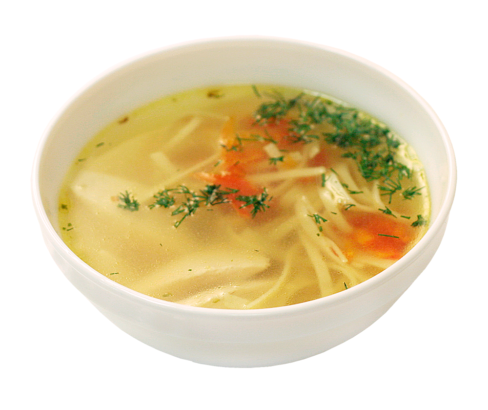

Chicken Zoodle Soup

What is Chicken Zoodle Soup ?
With the winter months approaching fast my niece and I co-conspired to come up with this warm and comforting soup using 'zoodles' that's easy on the waistline.
Ingredients
- 2 tablespoons olive oil
- 2 tablespoons olive oil
- 1 cup diced celery
- 3 cloves garlic, minced
- 4 slices Ham
- 5 (14.5 ounce) cans low-sodium chicken broth
Steps
- Heat olive oil in a large pot over medium-high heat. Saute onion, celery, and garlic in hot oil until just tender, about 5 minutes.
- Pour chicken broth into the pot; add carrots, chicken, basil, oregano, thyme, salt, and pepper. Bring the broth to a boil, reduce heat to medium-low, and simmer mixture until the vegetables are tender, about 20 minutes.
- Divide zucchini 'noodles' between six soup bowls; ladle broth mixture over the 'noodles.'
Return to the main page